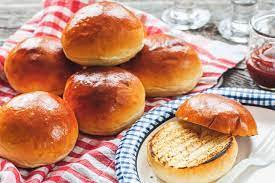

Hamburger Buns

Stop buying those mid af buns in the Supermarket and start making these bomb buns
Ingrediants (9 buns):
- Bread Flower(3 1/2cups)
- Vegatble Oil(2tbs)
- Sugar(2ts)
- Salt(1 1/2ts)
- Milk(1/2cup)
- Water(1/2cup)
- Yeast(2 1/2ts)
- Eggs(3)
Directions:
- Pour 1/2 cup of water and milk together
- Add 2 1/2 teaspoon of yeast.
- Mix and let it rest (10min)
- Add 3 1/2 cup of bread flour , 2 teaspoon of suger, 1 1/2 teaspoon salt, then mix
- While mixing add 2 tablespoon of vegetable oil, the yeast, one egg, and one egg yolk
- Mix for about 5 minutes
- Let it rest in greased bowl for 1 hour
- Divide 9 even pieces and roll into ball
- Brush ball with beaten egg
- Pre cook oven to 375°
- Cook till golden brown (20ish minutes)
return